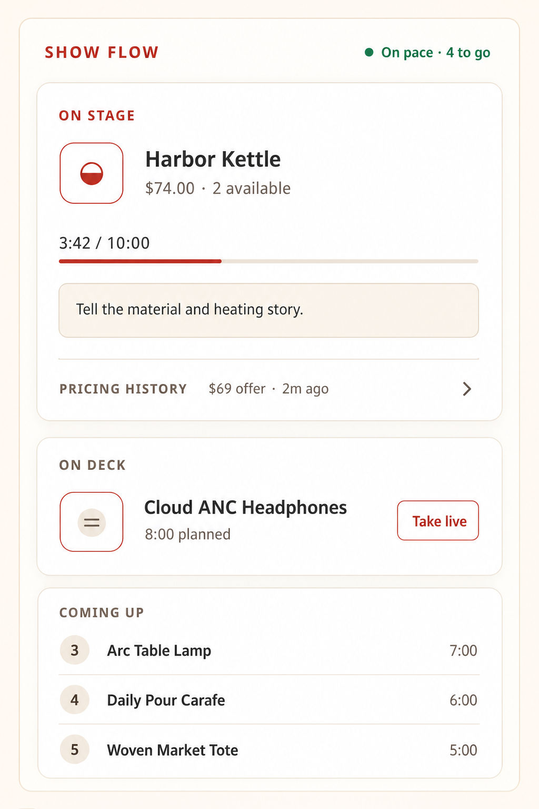
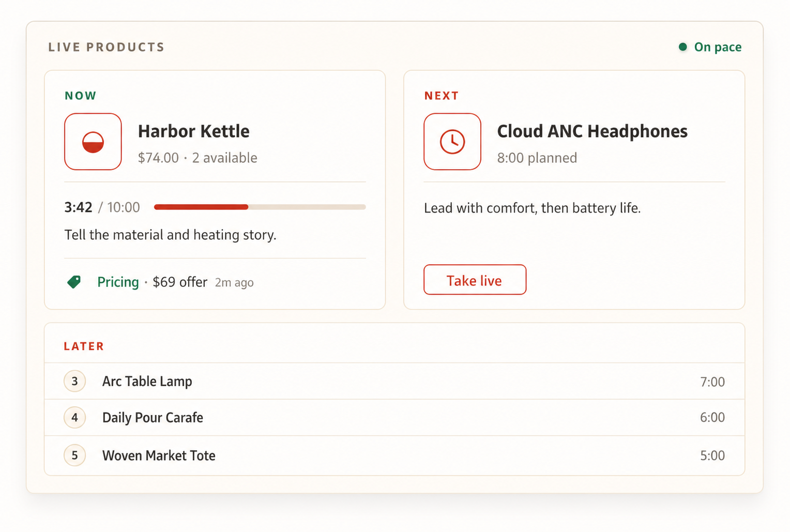
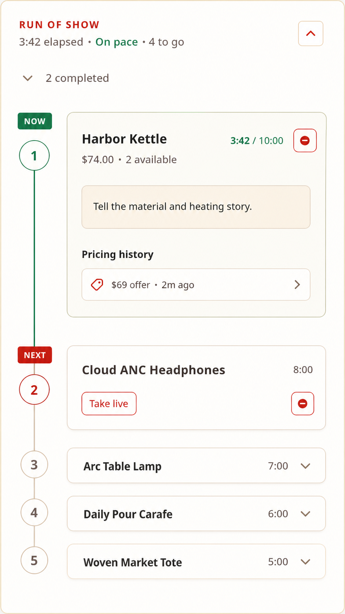

Option 1
Stacked Show Flow
The clearest On Stage → On Deck → Coming Up hierarchy and the safest fit for the existing narrow rail.
Best clarity · more vertical space
SideStage Studio · design exploration
Three ways to combine On Deck and Run of Show while keeping the current product, timing, talking points, pricing context, and upcoming lineup in one operational view. Select any image to open it at full resolution.
Option 1
The clearest On Stage → On Deck → Coming Up hierarchy and the safest fit for the existing narrow rail.
Best clarity · more vertical space
Option 2
Current and next products sit side by side for the fastest possible handoff during a live event.
Fastest comparison · needs more width
Option 3
The densest chronological view, with the active slot expanded and the remaining show collapsed beneath it.
Best for long shows · more interaction
Preview-only design artifacts · no production Studio behavior changed.